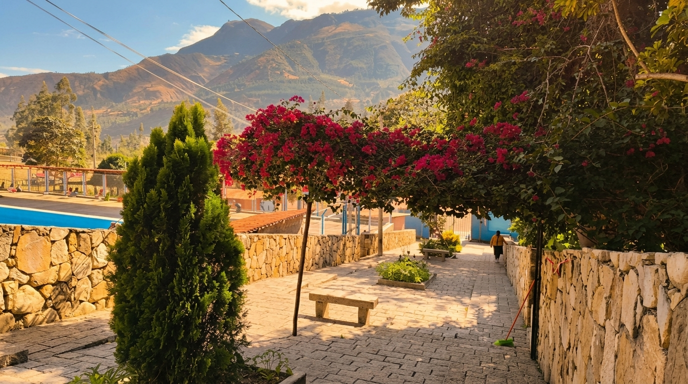

Calma consciente
Creemos en la pausa como una necesidad vital. Espacios concebidos para desacelerar la prisa diaria, respirar con profundidad y disfrutar del silencio andino.
Nuestra esencia y origen
Un refugio andino donde el calor de la tierra, la piedra rústica y el silencio de las montañas se encuentran para dar vida a una pausa consciente.
El origen natural
En las alturas de Huamachuco, entre las laderas que custodian el valle de Yanasara, el agua brota a temperatura templada directamente desde las profundidades de la tierra andina. Por generaciones, los caminantes y pobladores encontraron en estas nacientes un lugar de serenidad, reposo y respiro al abrigo de los cerros.
Yanasara nació bajo una premisa fundamental: acoger la calidez de esta agua sin alterar el equilibrio del valle. La arquitectura de nuestras pozas fue concebida a partir de las mismas rocas del entorno, labradas artesanalmente para crear cuencas rústicas donde el visitante pueda contemplar el paisaje mientras el tiempo recupera su ritmo natural.
Lejos del bullicio urbano, preservamos este espacio como un remanso de bienestar andino: un entorno donde el aire puro, el viento de montaña y el calor mineral invitan a desconectar la mente y reencontrarse con el presente.

Principios que nos guían
Cada rincón de Yanasara está pensado desde el respeto a la naturaleza y el cuidado de las personas.
Creemos en la pausa como una necesidad vital. Espacios concebidos para desacelerar la prisa diaria, respirar con profundidad y disfrutar del silencio andino.
Cuidamos las fuentes de agua natural y construimos con piedra autóctona, preservando la geografía andina de Yanasara sin generar impactos artificiales.
Recibimos a familias, parejas y viajeros con la calidez honesta de nuestra gente, procurando que cada estancia sea transparente, segura y acogedora.
Evolución en armonía
Hitos conceptuales que representan el desarrollo de nuestro espacio de reposo andino.
El surgimiento natural de vertientes de agua templada a través de las formaciones rocosas de Yanasara, marcando un punto de encuentro geológico y natural único en la sierra liberteña.
La talla y disposición de las primeras pozas rústicas de piedra volcánica y fluvial, moldeadas a mano para contener el agua tibia respetando la pendiente natural del terreno.
La integración de piscinas familiares, senderos de contemplación y el mirador del valle, brindando a visitantes de todas las edades un espacio de recreación y descanso seguro.
La consolidación de Yanasara como un destino de bienestar andino enfocado en el turismo responsable, la tranquilidad de las pozas privadas y la desconexión consciente.
Vive la experiencia
Conoce en detalle nuestras piscinas de agua templada, pozas privadas de piedra y áreas recreativas familiares.